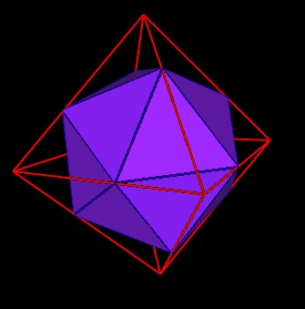
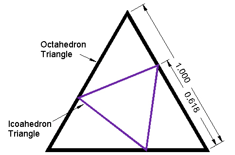
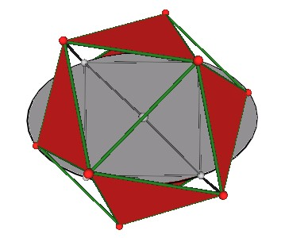
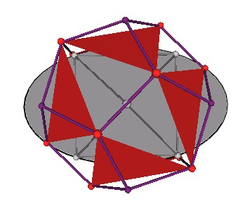
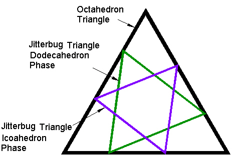
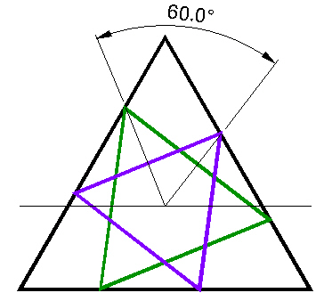
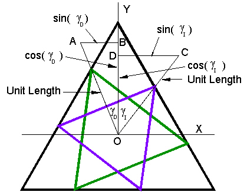

I have shown on a number of web pages that the Icosahedron can be defined within the octahedron.
|  |
| Figure 1 An Icosahedron within an Octahedron |
By doing so, the Icosahedron's vertices divide the Octahedron edges into Golden Ratio segments.
|  |
| Figure 2 Icosahedron triangle in Octahedron triangle |
Recall that the Octahedron and the Icosahedron are different phases of the Jitterbug motion. (See the Jitterbug description on these web pages .)
|  |
| Figure 3 Jitterbug at Icosahedron phase |
Additionally, the 8 triangles of the Jitterbug pass through a regular Dodecahedron phase, which I discovered and documented on another web page .
|  |
| Figure 4 Jitterbug at regular Dodecahedron phase |
If the position of one of the Jitterbug triangles in the Dodecahedron position is drawn in the triangular face of an Octahedron, as we did with an Icosahedron's triangular face, we would get the following diagram.
|  |
|
Figure 5 Jitterbug at regular Dodecahedron phase in Octahedron triangle |
Note, that the triangle has been scaled to intersect the Octahedron's triangle edges.
The scaling is not important at the moment. Scaling does not change the orientation of the triangles.
What is interesting is that the Jitterbug triangle in the Dodecahedron orientation is exactly 60° rotated from that of the Icosahedron's triangle. That is, given a Jitterbug triangle in the Icosahedron position, you need to rotate it, the Jitterbug triangle, an additional 60°, exactly, to be in the Dodecahedron orientation.
|  |
|
Figure 6 Jitterbug triangle in Dodecahedron and Icosahedron phases are 60° apart |
So, we see that two interseting triangles, in the "Star of David" configuration, is an illustration of a Jitterbug triangle in the Icosahedron and in the Dodecahedron positions.
It is interesting to me that the Icosahedron and Dodecahedron are related, through the Jitterbug, in a simple angular, 60°, relation.
To prove that the triangles are rotated 60° apart, consider the following Figure.
|  |
| Figure 7 Layout of triangles |
The vectors OA and OC are each of unit length.
We know the angles gammaD and gammaI from the previous work on the Jitterbug. (See these web pages .)
We want the angle gammaD + gammaI which can be calculated from considering the scalar product of the two vectors:
where
|OA| is the magnitude of the vector OA (and is equal to 1),
|OC| is the magnitude of the vector OC (and is equal to 1),
and
theta = gammaD + gammaI.
The scalar (dot) product of the vectors OA.OC on the left hand side of the equation can be calculated once the (x, y) components of the vectors have been calculated.
We set
which is the Golden Ratio.
From the previous Jitterbug work
Therefore, since
we get
Then the components of the OA vector are:
From the previous Jitterbug work, we know that
which means that
Then the components of the OC vector are
Making use of the relations
and noting that cos(60°) = 1/2
we need to show that
Which would then mean that theta = gammaD + gammaI = 60°.
Multiplying by 8 and re-arranging the terms, we get
Squaring both sides we get
using the relations mentioned above to simplify the right hand side, we get
This shows that theta = gammaD + gammaI = 60° and that the triangles are rotated exactly 60° from one another.
Usage Note: My work is copyrighted. You may reference and use my work in non-profit projects but you may not include my work, or parts of it, in any for-profit project without my consent.